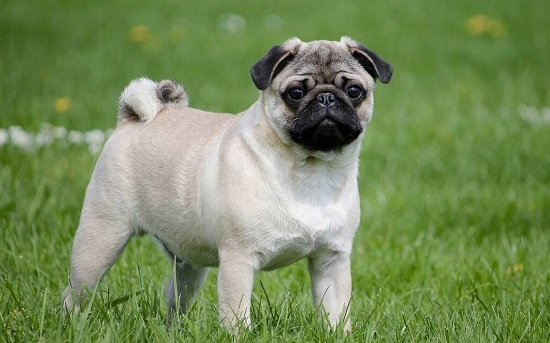

El pug (también conocido como carlino o doguillo) es una raza de perro con origen histórico en China, pero con el patrocinio del Reino Unido. Se trata de un perro pequeño de tipo molosoide. En una encuesta realizada en 2012-2013 por la Federación Cinológica Internacional (FCI), el pug resultó ser una de las treinta razas más populares del mundo

La existencia del pug se remonta a unos dos mil años, cuando los emperadores de China desarrollaron estas mascotas refinadas. Al igual que muchas razas del Extremo Oriente, los pugs eran un tesoro que pocos extranjeros recibían como regalo
Es un perro bajo y de aspecto cuadrado y compacto, la cabeza grande, redondeada y de aspecto sólido, está cubierta de pliegues; el hocico es cuadrado y chato; los ojos, grandes y oscuros; tiene las patas rectas y la cola rizada. El pelo es apretado, suave y brillante.
El pug puede ser de color leonado con sus dos variantes: color plata o albaricoque suave con un antifaz o máscara negro, en los dos casos presenta una raya negra que va de la cabeza a la cola, igual que también puede ser negro puro. Existen camadas de diferentes colores no reconocidos por el estándar de la raza, que pueden ser de color atigrado, siendo el blanco uno de los más comunes. Se han visto otras variantes pero en menor medida.